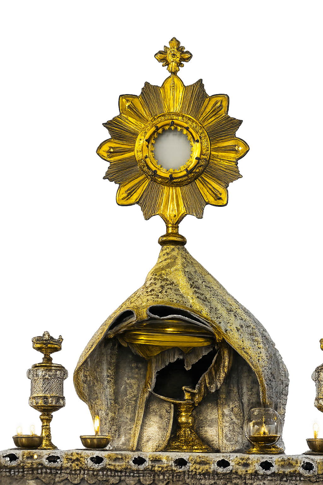
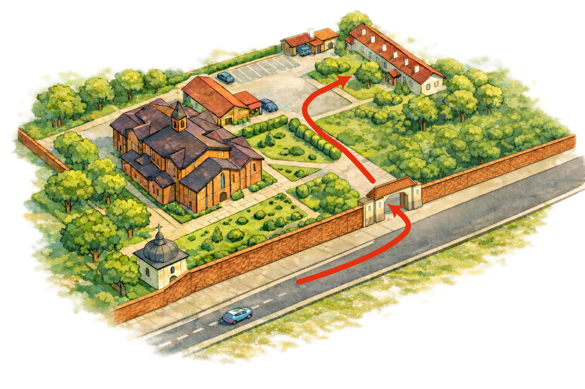

Warsztaty muzyki liturgicznej
stale wznosi się przed Tobą
jak kadzidło por. Ps 141,2

Zapisy
Zapisy prowadzone są przez formularz Google. Po wysłaniu zgłoszenia otrzymasz wiadomość z potwierdzeniem. Nie ma terminu końcowego zapisów — prosimy jedynie o wcześniejsze zgłoszenie, jeśli chcesz mieć zapewniony obiad.
Co podać w zgłoszeniu?
W formularzu prosimy o: imię i nazwisko oraz kontakt (numer telefonu lub e-mail) — wyłącznie do spraw organizacyjnych. Jeśli planujesz udział częściowy, dopisz w polu „uwagi”, na które bloki planujesz przyjść.
- PotwierdzeniePo wysłaniu zgłoszenia przyjdzie e-mail z potwierdzeniem.
- ObiadOsoby zapisane do 24.02 mają zapewniony obiad w sobotę.
- Udział częściowyMożliwy — prosimy to zaznaczyć w zgłoszeniu.
O warsztatach
Celem warsztatów jest zachwyt nad Bogiem przez liturgię i jej integralną część, którą jest muzyka. Pracujemy nad śpiewem wielogłosowym (SATB), a zwieńczeniem są Msze Święte, podczas których wykonamy przygotowane utwory. Tematyka: wielkopostna i eucharystyczna; po Mszy przewidziany jest czas adoracji.
Dla kogo?
Dla pasjonatów, początkujących i doświadczonych. Warto mieć doświadczenie ze śpiewaniem, ale można też zacząć bez niego, jeśli ktoś śpiewa ze słuchu i chce się uczyć. Zapraszamy także młodszych uczestników, jeśli mają doświadczenie śpiewu i zapewnioną opiekę osoby dorosłej.
- MateriałyNuty będą przygotowane na warsztaty — nie trzeba nic drukować.
- Podział na głosySATB — ustalany na miejscu.
- Msza jako zwieńczenieMsza Święta to okazja, by wykonać przećwiczone utwory w liturgii.
Program
Układ jest praktyczny: rozśpiewka, praca w głosach, składanie całości i próba generalna. Msza Święta jest zwieńczeniem — śpiewamy przećwiczone utwory w liturgii.
Sobota • 28.02.2026 (9:30–18:30 + Msza 18:30)
Otwarcie sali
Wejście do budynku, zgłoszenia, sprawy organizacyjne.
Rozśpiewka
Oddech, emisja, przygotowanie do wielogłosu.
Praca w SATB
Nauka materiału w sekcjach, intonacja i tekst.
Przerwa
Herbata, ciastka, owoce.
Obiad
Dla zapisanych do 24.02 • prosty posiłek.
Próba całości
Pełne przejścia, wejścia, zakończenia.
Msza Święta
Zwieńczenie dnia • wykonanie przećwiczonych utworów.
Niedziela • 01.03.2026 (9:30–12:00 + Msza 12:00)
Rozśpiewka
Wprowadzenie i przygotowanie do prób.
Powtórka repertuaru
Praca nad utworami liturgicznymi.
Próba generalna
Ostatnie przygotowanie przed Mszą.
Msza Święta
Wykonanie przygotowanych utworów. Po Mszy krótka adoracja.
Informacje praktyczne
Sala znajduje się w budynku parafialnym przy parkingu obok kościoła. Budynek jest otwarty od 9:00. Wejdź przez główne drzwi, idź prosto i skręć w lewo — na końcu jest sala.
- Co zabraćWygodne ubranie na próby, coś do picia. Na Mszę — strój schludny.
- PrzerwyHerbata, ciastka i owoce w przerwach.
- ParkingDuży parking • wjazd przez dość wąską bramę — prosimy o ostrożność.
- DostępnośćWejście bez progów • miejsce dostępne dla osób z niepełnosprawnościami.
- Obiad w sobotęDla zapisanych do 24.02 • podstawowy posiłek • bez wariantów diet.
- NiedzielaBrak organizowanego posiłku • będą przekąski i owoce.
- MateriałyNuty będą przygotowane; planowane są też materiały przygotowujące śpiew, które będą opublikowane w późniejszym terminie.
Plan i orientacja
Poniżej znajduje się grafika z orientacyjnym planem terenu. Sala warsztatowa jest w budynku parafialnym przy parkingu. Prosimy o ostrożność przy wjeździe — brama wjazdowa jest dość wąska.

Prowadzący • Paweł Bębenek
Paweł Bębenek to znany i ceniony polski dyrygent, kompozytor i wokalista, którego twórczość łączy głęboką duchowość z bogatą tradycją muzyki liturgicznej. Jest absolwentem podyplomowych studiów z chóremistrzostwa i emisji głosu oraz członkiem Stowarzyszenia Polskich Muzyków Kościelnych, a jego doświadczenie obejmuje dziesięciolecia pracy z chórami i scholami w Polsce i za granicą. Jego muzyka — zarówno kompozycje, jak i aranżacje — była wykonywana przez chóry i zespoły w wielu krajach, od Polski przez Europę aż po Stany Zjednoczone. Bębenek jest również autorem licznych nagrań i wydawnictw nutowych, które znalazły szerokie zastosowanie w środowisku muzyki sakralnej.
Dlaczego warto przyjść?
Jako prowadzący warsztaty liturgiczno-muzyczne, Paweł Bębenek inspiruje uczestników do odkrywania piękna śpiewu w kontekście liturgii. Jego podejście łączy solidne umiejętności techniczne z troską o duchowe przeżycie muzyczne — tak, aby każdy uczestnik mógł wzrastać zarówno artystycznie, jak i w modlitwie przez muzykę.
- Doświadczenie międzynarodoweProwadził chóralne warsztaty muzyczne w wielu krajach Europy i poza nią.
- Bogaty dorobek kompozytorskiJego utwory i aranżacje znajdują się w śpiewnikach i repertuarach scholi oraz chórów.
- Muzyka sakralnaSkupiona na pięknie liturgii, łącząca tradycję z głębokim przeżyciem wiary.
FAQ
Najczęstsze pytania — krótkie odpowiedzi.
Czy trzeba umieć czytać nuty?
Nie. To pomaga, ale nie jest wymagane. Jeśli śpiewasz ze słuchu i chcesz się uczyć, dasz radę.
Czy mogę przyjść tylko na część warsztatów?
Tak. Udział częściowy jest możliwy — przyjdź na tyle, na ile możesz.
Czy są ograniczenia wiekowe?
Zapraszamy także młodszych, jeśli mają doświadczenie śpiewu i są pod opieką osoby dorosłej.
Czy trzeba coś przynieść?
Nuty będą przygotowane. Warto zabrać coś do picia oraz wygodny strój na próby.
Co jeśli muszę zrezygnować?
Prosimy o kontakt mailowy — pomoże to w organizacji.
Kontakt
W sprawach organizacyjnych (zapisy, pytania, udział częściowy, odwołania) prosimy o kontakt mailowy.
Kontakt organizacyjny
E-mail: mleczek_pradnik@outlook.com
Miejsce: Parafia św. Jana Chrzciciela • ul. Dobrego Pasterza 117 • Kraków
- W razie rezygnacjiProsimy o wiadomość mailową — ułatwi to organizację.
- Wejście do saliGłówne drzwi → prosto → w lewo → na końcu sala.
- ParkingDuży parking • wjazd przez wąską bramę — prosimy o ostrożność.
RODO i zdjęcia
Zbieramy minimum danych i używamy ich wyłącznie do organizacji warsztatów. Poniższe teksty można wykorzystać w formularzu.
Klauzula informacyjna
Administratorem danych osobowych jest Parafia Rzymskokatolicka św. Jana Chrzciciela w Krakowie, ul. Dobrego Pasterza 117, 31-416 Kraków. Dane podane w zgłoszeniu (imię i nazwisko oraz kontakt: telefon lub e-mail) przetwarzane są wyłącznie w celu organizacji warsztatów: potwierdzenia zgłoszenia, przekazania informacji organizacyjnych oraz kontaktu w sprawach dotyczących wydarzenia. Podanie danych jest dobrowolne, ale niezbędne do udziału.
Zgoda na zdjęcia i nagrania
„Wyrażam zgodę na nieodpłatne utrwalanie i rozpowszechnianie mojego wizerunku w postaci zdjęć i krótkich nagrań wykonanych podczas warsztatów (dokumentacja wydarzenia), publikowanych na kanałach parafialnych/organizatora. Zgoda jest dobrowolna i może zostać cofnięta poprzez kontakt mailowy.”